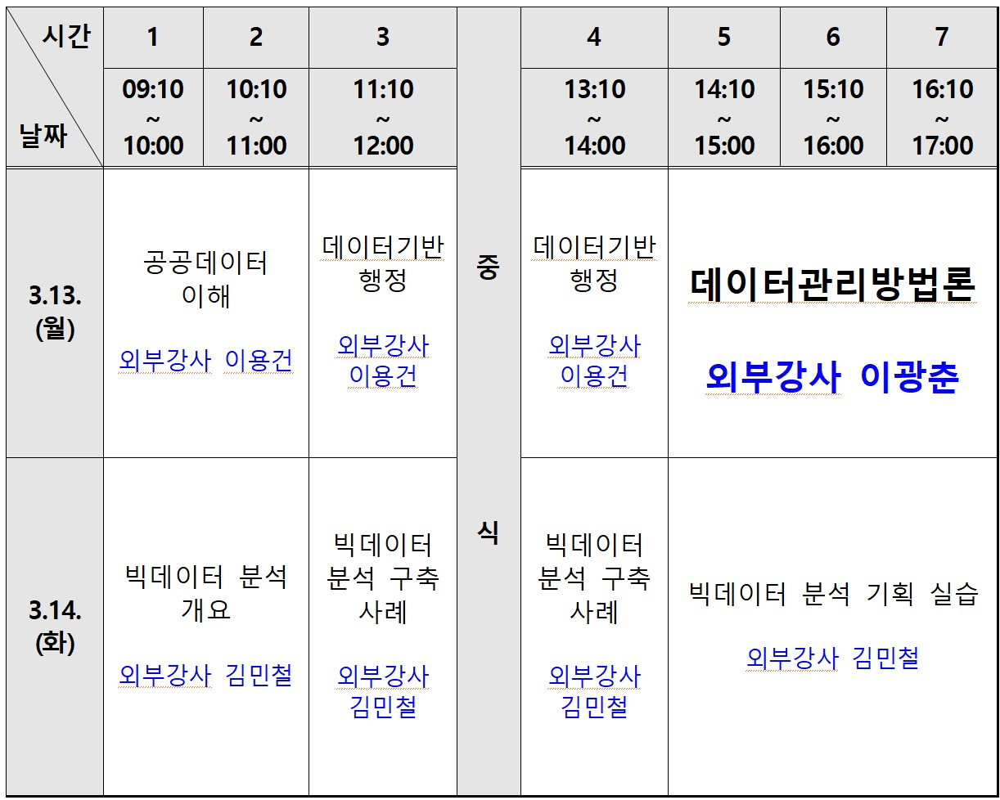

챗GPT 통계
서문

제23-2차 공공 빅데이터 분석활용교육 (9.18~19)

참고 자료
- 인공지능 기초
- 데이터 과학 언플러그드 : https://r2bit.com/book_unplugged/
- 리보그 세상 - 블록 언어 → R/파이썬 : https://statkclee.github.io/reeborg/
- 데이터 과학 프로그래밍 : https://r2bit.com/book_programming/
- 데이터 사이언스
- GS 칼텍스 디지털 아카데미: https://r2bit.com/curriculum/
- 연세대학교 데이터 과학: https://statkclee.github.io/yonsei/ https://statkclee.github.io/yonsei2/
- 챗GPT 데이터 사이언스
- 챗GPT PPT: https://r2bit.com/bitSlide/
- 챗GPT 디지털 글쓰기: https://r2bit.com/quarto/
- 챗GPT 디지털 출판: https://r2bit.com/bitPublish/
- 챗GPT 실습: https://r2bit.com/gpt-edu/
- 챗GPT 자료: https://r2bit.com/chatGPT/
- 커뮤니티
- 공익법인 한국 R 사용자회: https://r2bit.com/
- 서울 R 미트업: https://r2bit.com/seoul-r/
- 한국 R 컨퍼런스: https://use-r.kr/
[신간도서] 챗GPT 유닉스 쉘

“챗GPT 유닉스 쉘”은 단순한 기술서적이 아니고 지금 챗GPT AI 시대를 지탱하는 사고체계다. 컴퓨터의 대부인 IBM이 새로운 제국의 시대를 열었지만, 그 제국을 흔들었던 힘은 바로 ’유닉스’였다.
유닉스는 레고와 닮았다. 한가지 기능에 특화된 레고블록 각각은 별볼일 없지만 레고블록을 조합하면 명작으로 재탄생한다. 레고를 이해하면 유닉스도 쉽게 이해되고 강력한 소프트웨어를 제작할 수 있다.
피터 파커(스파이더맨)의 삼촌 벤자민 파커는 “큰 힘에는 큰 책임이 따른다.”는 명언을 남겼다. 자연어를 이해하는 챗GPT가 등장하며 큰 책임을 다하면서 큰 힘을 쓸 수 있는 여건이 마련되었다.
이 책은 21세기 가장 섹시한 직업으로 불리는 ‘데이터 과학’ 분야를 주로 다루고 있지만, 챗GPT와 유닉스의 조합이 얼마나 강력한지 직접 체험함으로써 앞으로 펼쳐질 미래를 예측하는데도 도움을 줄 것이다.